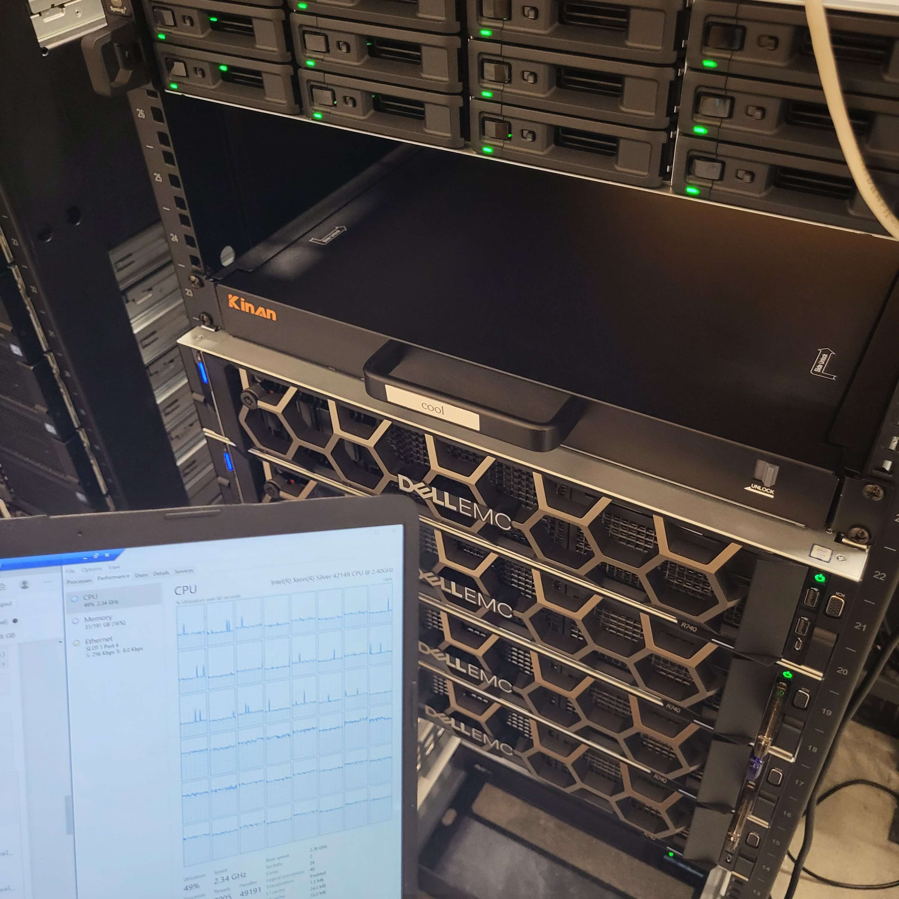

About Me
Enterprise Networking and Server solutions
I have a keen interest in enterprise networking and server hardware, which I explore through my home lab setup. In my home lab, I self-host a variety of services, including file sharing, game servers, and web hosting, allowing me to experiment with different technologies and configurations. This hands-on experience helps me understand the intricacies of setting up and deploying networks in small environments. From configuring routers and switches for network security, I enjoy the challenge of building reliable network solutions that can scale to meet different needs. My home lab also serves as a playground for testing new ideas and staying up-to-date with the latest developments in networking and server management.
More comming soon
About the stuff I do and the such